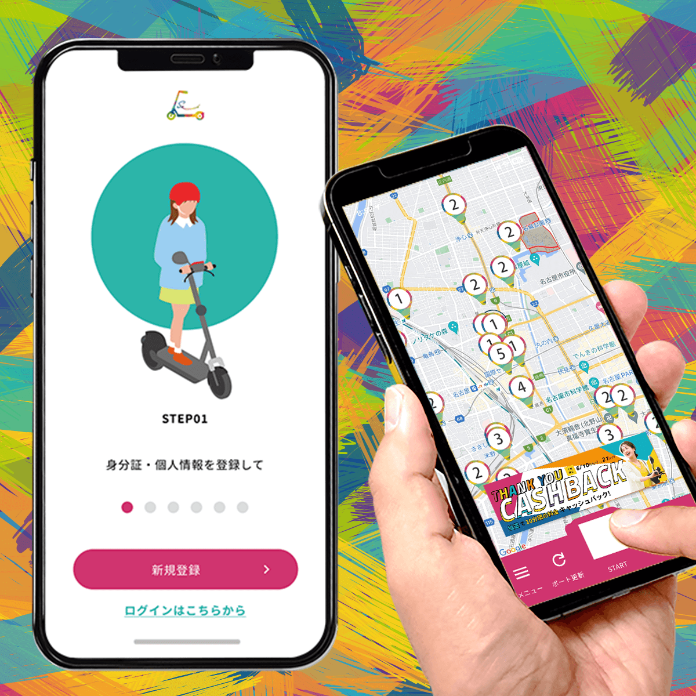
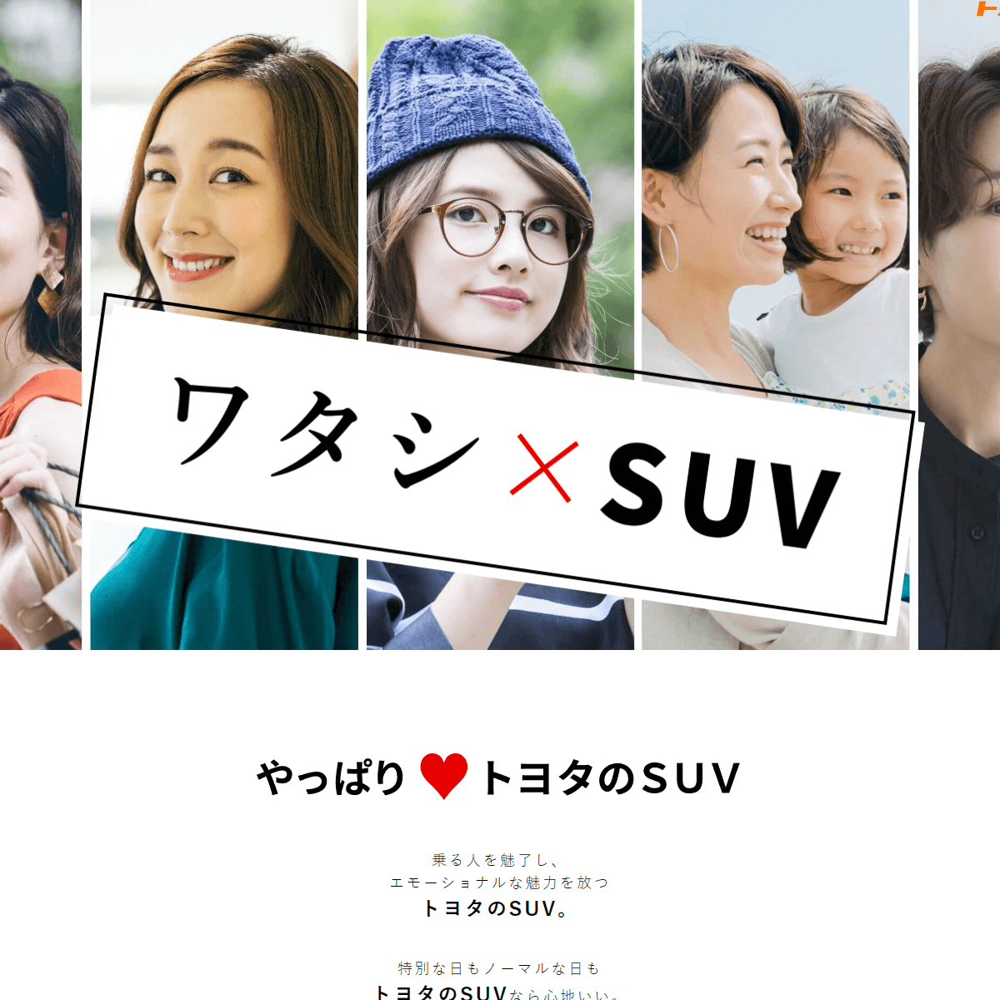

RECENT WORKS
直近の業務でぜひ見ていただきたい案件です。
アプリデザイン（UI/UX）とブランドデザイン
自社サービスのキックボードシェアリングアプリの開発に従事しました。そこでは主にUI/UXデザインを行なっておりました。 また、サービスのブランドデザイン、Webサイトのデザイン、SNSの運用を行なっておりました。

LPデザイン＆コーディングとディレクション
ディレクションからデザイン、コーディングまで行いました。 お客様にはUX視点からの提案からスケジュール管理、折衝を行いました。 UX視点からの提案が大変好評で、それからシーズン毎のLPの案件を任せて頂きました。 また、時にはデザインの作成やコーディングも行なっておりました。
